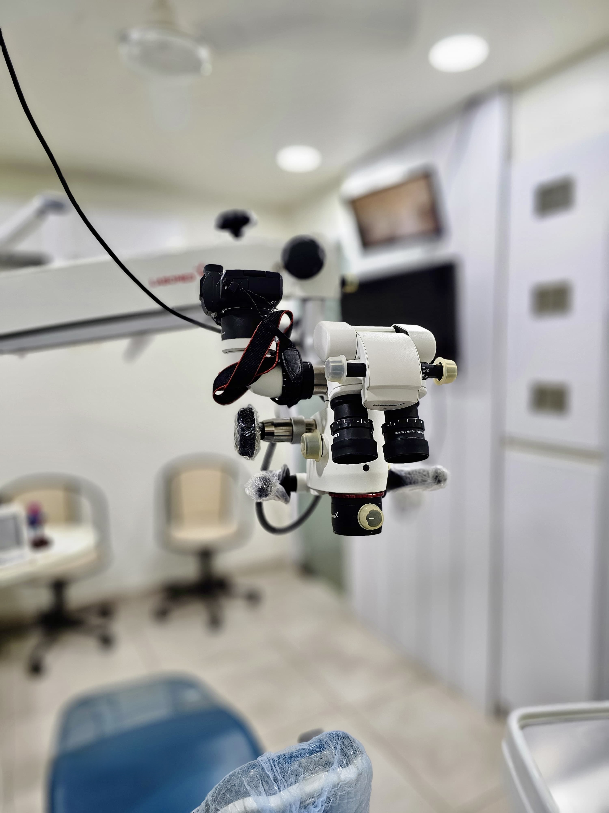

Single-visit root canal treatment
Most uncomplicated single-canal teeth can be completed in one sitting under the microscope, including front teeth and pre-molars.
Specialist endodontic care — primary root canals, retreatments and laser-assisted disinfection — performed by a Microendodontist with 25+ years of experience. Predictable. Conservative. Lasting Results.

Up to 25× magnification reveals second canals, calcified pathways, hairline fractures and missed anatomy that cause most root-canal failures. Treating what's actually there is the difference between "done" and "done well."
A digital radiograph (RVG) plus a clinical examination under magnification confirms whether the pulp is irreversibly affected. We discuss the alternative (extraction + implant) on paper before agreeing on a plan.
Local anesthesia is administered, and the tooth is isolated with a rubber dam — keeping the field sterile and ensuring no debris is swallowed. From this point on you should feel pressure, not pain.
Under the microscope, a conservative access cavity is shaped through the crown. Magnification helps locate every canal — including hidden second canals that are common in molars.
Torque-controlled rotary NiTi files shape the canals to a smooth, tapered form. The shape matters as much as the cleaning — it's what allows the next step to seal the canal in three dimensions.
A diode laser activates the irrigant and reaches the lateral canals and dentinal tubules — areas mechanical instruments can't touch. This is where microbial load is dramatically reduced.
The canal system is sealed with a thermoplasticized gutta-percha system that flows into every accessory canal — a denser, more predictable seal than cold lateral condensation.
A core build-up restores the tooth, followed by a crown in a separate visit. A well-restored RCT tooth can last decades — equal in function to a healthy tooth.
Every case is unique. These are the most common reasons patients are referred to us — directly or as a second opinion after a failed treatment elsewhere.
Most uncomplicated single-canal teeth can be completed in one sitting under the microscope, including front teeth and pre-molars.
Upper molars often have a hidden second canal (MB2) that's responsible for many failed RCTs. The microscope finds it.
A previously treated tooth with persistent pain or infection. We re-examine, remove the old filling, and re-treat under magnification.
When orthograde retreatment isn't an option, a microscopic surgical procedure removes the root tip and seals the apex from below.
Conservative treatment for young or immature teeth — preserving as much vital pulp tissue as possible to allow continued root development.
A root-canal-treated tooth needs proper coronal restoration. We plan the build-up and crown alongside the endodontic work.
The treatment itself is essentially painless — the local anesthesia is what makes a toothache stop, not what causes one. You should feel pressure and vibration, never sharp pain. Mild tenderness for one to two days afterwards is normal.
You're paying for the specialist's time, the equipment, and — more importantly — the higher first-time success rate. A well-done RCT lasts decades. A redo costs the same again, plus a possible crown replacement, plus weeks of discomfort.
A well-performed RCT followed by a proper crown can last 20+ years and often a lifetime. Two things determine longevity: the quality of the canal seal, and the quality of the coronal restoration. We plan both together.
If your natural tooth can be saved, saving it is almost always the better long-term decision — biologically, financially and in terms of jaw bone preservation. Implants are excellent when a tooth is unsaveable, not as a first-line alternative.
Most patients return to work the same day. Avoid chewing on the treated side until the final crown is placed — a build-up filling is a temporary measure, not the final restoration.